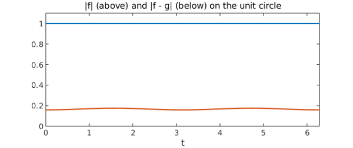
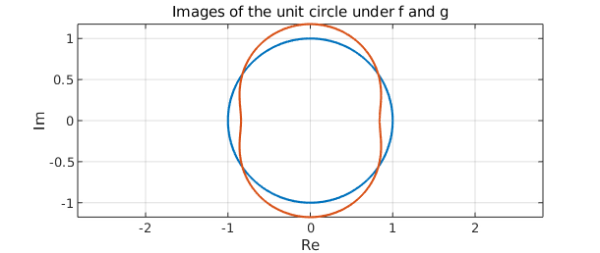
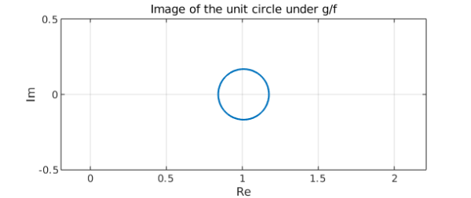
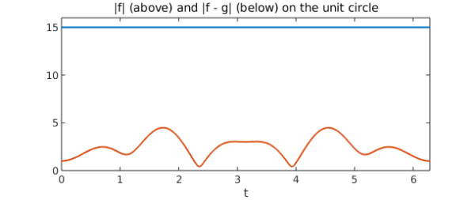
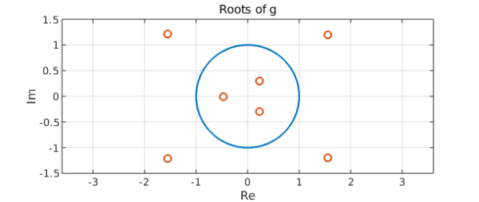
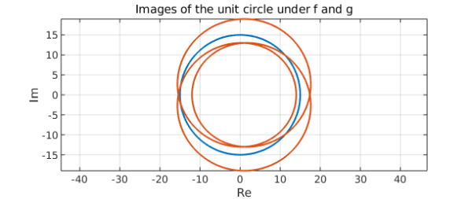
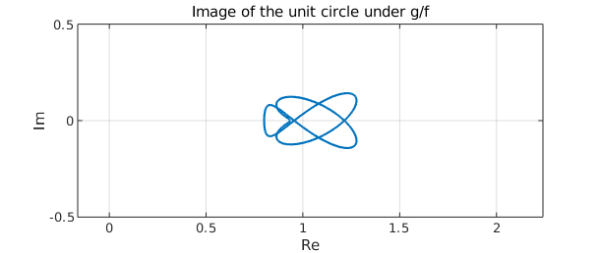

LW = 'LineWidth'; lw = 1.6; MS = 'MarkerSize'; FS = 'FontSize';
In complex analysis, Rouche's Theorem gives a method for telling when two holomorphic functions have the same number of zeros in a region of the plane bounded by some curve. More precisely, suppose that $\Omega$ is an nonempty simply connected open subset of the complex plane and that $\gamma$ is a closed curve in $\Omega$ such that $n(\gamma, z)$ is either $0$ or $1$ for all points $z$ not on $\gamma$, where $n(\gamma, z)$ is the winding number of $\gamma$ about $z$. If $f$ and $g$ are holomorphic functions in $\Omega$ and $|f(z) - g(z)| < |f(z)|$ for all points $z$ on $\gamma$, then $\gamma$ encloses the same number of zeros of $f(z)$ as it does of $g(z)$.
We can use Chebfun to help us gain some intuition as to why this theorem is true. As a simple example, let us take $\gamma$ to be the unit circle, parametrized by $z = \gamma(t) = e^{it}$, $t \in [0, 2\pi]$:
t = chebfun('t', [0, 2*pi]);
z = exp(1i*t);
Let us choose functions $f$ and $g$ which have roots in the unit disc and which we know satisfy the hypotheses of the theorem. (Of course, the functions will need to have the same number of zeros inside the unit disc.) $f(z) = z$ and $g(z) = \sin(z)$ each have a single zero inside the unit disc at $z = 0$, and the following plot of $|f|$ and $|f - g|$ confirms that they meet the requirements of the theorem:
f = z;
g = sin(z);
plot(abs(f), 'b', abs(f - g), 'r', LW, lw)
title('|f| (blue) and |f - g| (red) on the unit disc', FS, 14)
xlabel('t')
axis([0 2*pi 0 1.1])

To understand what is really going on, it is instructive to examine the images of the unit circle under $f$ and $g$, which the following plot displays:
plot(f, 'b', g, 'r', LW, lw)
title('Images of the unit circle under f (blue) and g (red)', FS, 14)
xlabel('Re'), ylabel('Im')
grid on, axis equal

We notice that the images each encircle the origin exactly once, in accordance with the argument principle. This is the essence of Rouche's Theorem. The condition $|f(z) - g(z)| < |f(z)|$ ensures that the images of the unit circle under $f$ and $g$ are "not too far apart", so they must encircle the origin the same number of times. An equivalent way of seeing this is by considering the image of the unit circle under $g/f$:
plot(g./f, 'b', LW, lw)
title('Image of the unit circle under g/f', FS, 14)
xlabel('Re'), ylabel('Im')
axis([0 1.5 -0.5 0.5])
grid on, axis equal

From the plot, we see that this curve does not encircle the origin at all. Hence, by the argument principle, $g/f$ must have the same number of zeros in the unit disc as it does poles. But the zeros of $g/f$ are the zeros of $g$, while the poles of $g/f$ are the zeros of $f$. Hence, $f$ and $g$ must have the same number of zeros inside the unit disc. This happens because the condition in Rouche's Theorem ensures that the image of the unit circle under $g/f$ does not enclose the origin.
As a slightly more sophisticated example, consider the problem of identifying how many roots the polynomial $g(z) = z^7 - 2z^5 + 15z^3 - z + 1$ has inside the unit disc. (This exercise is adapted from one in Ahlfors's classic text [1].) If $|z| = 1$, then the largest magnitude term in $g(z)$ is $15z^3$, so let's try setting $f(z) = 15z^3$ and applying Rouche's Theorem. We can check that $f$ and $g$ satisfy the hypotheses by plotting $|f(z) - g(z)|$ and $|f(z)|$ on the same graph:
f = 15*z.^3;
g = z.^7 - 2*z.^5 + 15*z.^3 - z + 1;
plot(abs(f), 'b', abs(f - g), 'r', LW, lw)
title('|f| (blue) and |f - g| (red) on the unit disc', FS, 14)
xlabel('t')
axis([0 2*pi 0 16])

The plot shows that the inequality $|f(z) - g(z)| < |f(z)|$ does indeed hold on the unit circle. Rouche's Theorem then tells us that $f$ and $g$ have the same number of zeros inside the unit disc. Since $f$ clearly has three such zeros, $g$ must have three as well. We can confirm this by using MATLAB to compute and plot the roots of $g$:
p = [1 0 -2 0 15 0 -1 1];
r = roots(p);
plot(z, 'b', LW, lw), hold on
plot(r, 'ro', MS, 7), hold off
title('Roots of g', FS, 14)
xlabel('Re'), ylabel('Im')
axis([-1.5 1.5 -1.5 1.5])
grid on, axis equal

We see that $g$ does indeed have three roots inside the unit disc, as the theorem predicts. The images of the unit circle under $f$ and $g$ are
plot(f, 'b', g, 'r', LW, lw)
title('Images of the unit circle under f (blue) and g (red)', FS, 14)
xlabel('Re'), ylabel('Im')
grid on, axis equal

This plot is difficult to interpret because the image curves intersect themselves, but if we look carefully, it is possible to see that each encircles the origin exactly three times. Turning to the plot of $g/f$, we have
plot(g./f, 'b', LW, lw)
title('Image of the unit circle under g/f', FS, 14)
xlabel('Re'), ylabel('Im')
axis([0 1.5 -0.5 0.5])
grid on, axis equal

It is clear that this curve does not enclose the origin.
References
- Ahlfors, L. Complex Analysis, Third Edition. New York: McGraw-Hill, Inc., 1979.